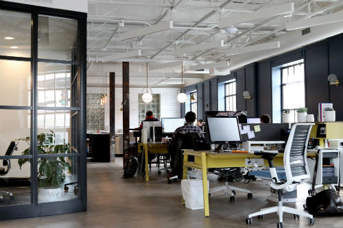

Junior Web Developer, Xreflow– Southam, ENG
A fantastic opportunity is available for an ambitious and creative Junior Web Developer to join.
Based in Southam (but remote working is possible after bringing on board) the successful Junior Web Developer will earn a salary of £22,000 per annum. Xreflow is a family run business is known for providing an excellent service, developing their employees to the same high standard. As the business develops so will you, learning and growing as part of our tightly knit, dynamic and friendly team.
Starting and updating and integrating other existing business projects.
The company are looking for an enthusiastic developer, with a positive and intelligent attitude. They are particularly interested in speaking to candidates with the following key skills and experience are essential: - HTML - CSS Java Script, Word Press and Photoshop.
If you are interested in the Junior Web Developer role, based in Southam, then please apply by submitting your CV.
Job Type: Full-time
Salary: £22,000.00 /year
Pros
- Pretty good salary for a junior web developer
- Full time position within the company
- Possibility for remote working
Cons
- Family run business
- Not all responsibilities are listed
- Based in Southam
Courtesy of Glassdoor
Web Developer, Benson Price Consultants Ltd
We are looking for a Web Developer who has graduated and had a couple of years in a commercial environment to join this specialist web design agency. You will have responsibility for ensuring the quality of build and functionality meet the client briefs.
This is an ideal opportunity for a developer who is passionate about web development, with a keen eye for new technology and is looking for an opportunity to develop their career.
Initially, part of a growing team you will have to opportunity to develop your career as the company continuous to grow. Ultimately they are looking for someone keen to take the development lead within the business.
You will need to be a passionate web developer, a conscientious person with a desire to constantly develop your skills, with a couple of years commercial experience in web development. The Ideal candidate will have an up to date portfolio showcasing your expertise and passion
You will need experience of WordPress, CSS3, HTML, CMS systems, JavaScript and an understanding of PHP. Some responsive design experience would be ideal.
A salary of £20,000 - £30,000, depending on experience is offered along with a fast paced varied working environment, Team orientated company with a vibrant atmosphere where everybody works to great customer satisfaction. Easily commutable from Peterborough, Northampton, Kettering, Corby, Milton Keynes, with free car parking
Job Type: Full-time
Salary: £20,000 - £30,000 /year
Pros
- In Northamptonshire, distance wise fairly close.
- Good starting salary.
- Free car parking.
Cons
- Need previous experience.
- Not much information about the agency.
- Need an up-to-date portfolio.
Courtesy of Reed